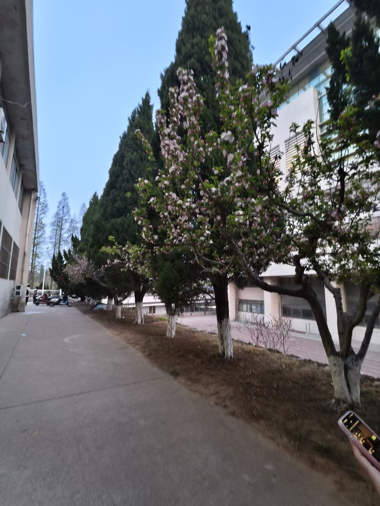
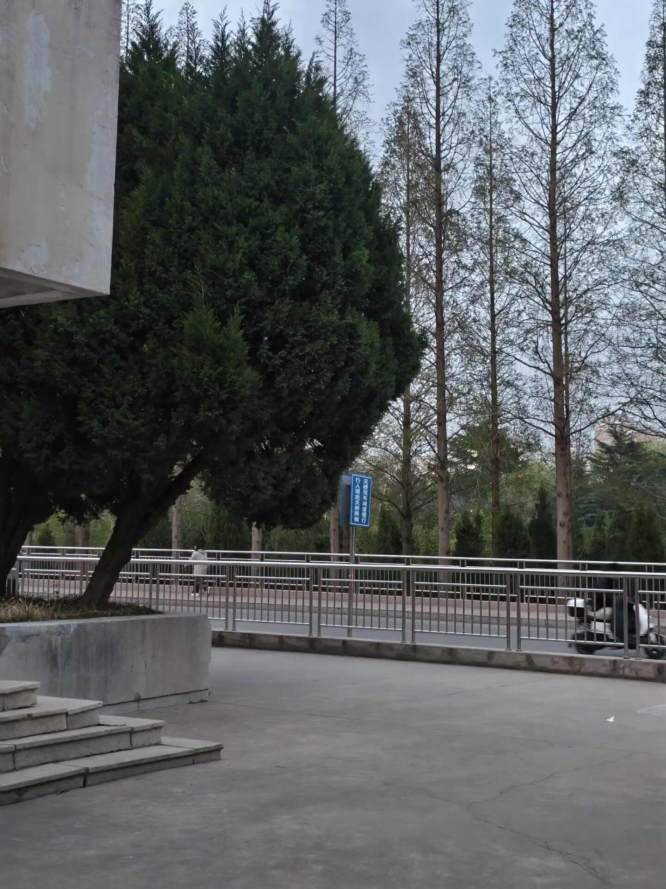

春日的校园，是被春风唤醒的诗意天地。漫步在教学楼旁的步道上，道路两侧的西府海棠正开得热烈，粉白相间的花朵缀满枝头，风一吹便簌簌落下，铺成一条浪漫的花径。
高大的圆柏苍劲挺拔，与盛放的海棠相映成趣，为校园增添了一抹沉稳的绿意。远处的水杉抽出嫩黄的新叶，在蓝天的映衬下愈发挺拔，像是守护校园的卫士。
春日的阳光透过枝叶洒在步道上，光影斑驳，空气中满是清甜的花香，每一次呼吸都能感受到春天的温柔。无论是清晨的薄雾，还是傍晚的余晖，春日的校园都有着不一样的美感，
让人沉醉其中，流连忘返。
除了繁花与绿树，校园的春日更有青春的气息。同学们或在步道上漫步，或在树下背书，或用镜头记录下春日的美好，欢声笑语与鸟鸣风声交织在一起，
构成了校园最动人的春日交响曲。湖边的草坪上，嫩绿的草芽从土里钻出，点缀着星星点点的小野花，为校园添上了勃勃生机。
春日的校园，不仅有视觉上的享受，更有心灵上的治愈，每一处风景都藏着青春的故事，每一缕春风都带着成长的希望。
校园的人文景观，承载着学校的历史与文化，是校园精神的具象化体现。从古朴的教学楼到现代化的过街天桥，从藏书丰富的图书馆到充满活力的校园步道， 每一处建筑都诉说着学校的发展与传承，见证着一届又一届学子的青春与成长。

